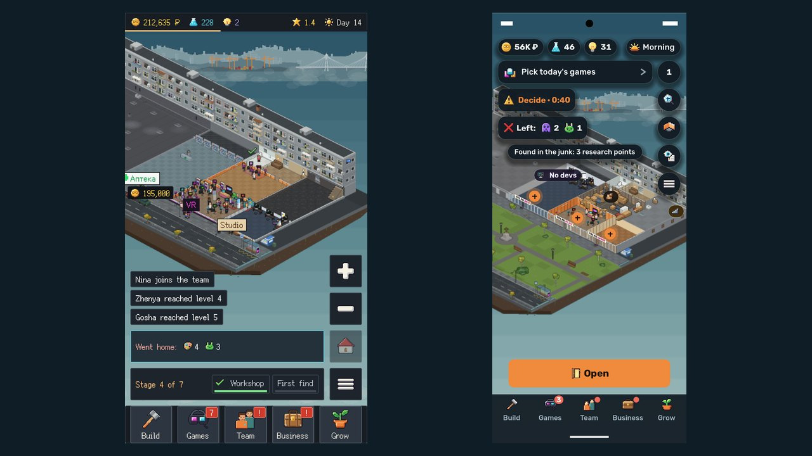
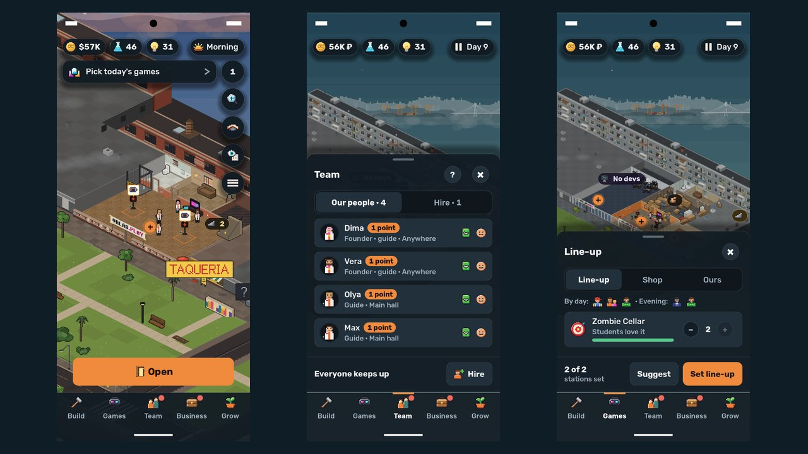

In 2016 one of us opened a VR lab on the ground floor of a panel block in Vladivostok. Two stations, a pharmacy next door, a back room full of somebody else’s junk. On Monday 16 November we started a game about it, and since Tuesday it has been public on itch.io, free in a browser.
Update, 18 November: the game is now called VR Arcade Story. Why the name went, and what build 28 added.
It is a tycoon game in the small, friendly tradition: a cutaway building, tiny people, a business that grows room by room. In the game the lab never stops growing, and one day it moves to San Francisco. The real one never got that far.

The first build: wiping lenses
The first playable version was a chore loop. A guest walks in, you tap to seat them. A lens gets greasy, you tap to wipe it. A cable tangles, you tap to untangle it. It ran, it had art, it passed its checks.
The verdict from the person who ran the real lab: "It’s small. The gameplay: zero."
He was right, and the reason is worth writing down. In this kind of game the fun is in deciding, not in doing. Nobody plays a shop game to work the till. We had built the staff’s job and handed it to the player.
So the loop was replaced the same day. Guests and staff now run themselves. You decide what stands where, which game plays on which station, who to hire and what to do with the back room. Guests arrive wanting a kind of game, and if nothing in the hall plays it they go home and say so. The next verdicts, in order: "OK. Better." Then, after an hour with build 10: "It’s pretty cool." After build 14: "We are definitely on the right track." After build 20: "This is getting close to a good game."
Three more things that got thrown away
- A wall of menus. After build 18: "I like it, but the menus, the arrows. I don’t like it." We rewrote the interface three times from a written list of rules and missed three times. Then we drew two directions as pictures and he picked one in a minute. The lesson is ours: for how a thing looks and feels, show a picture to choose from before building anything.
- Ready-made art packs. We tested whether open asset packs could replace our pixel art, which is drawn by code. His answer to the test picture: "That pack is bad. No way." The code-drawn art stays, and gets pushed further.
- Low walls. We cut the walls down so they would never hide the floor. It looked "like the roof is on the ground". The walls are back, with three ways to show them.

Two bugs that looked like design problems
"The games end very fast" sounded like a balance complaint: not enough games in the shop. The cause was one helpful button. The suggested line-up put the same title on every station, so every guest who wanted that kind of game played it out in a day. The line-up now spreads titles and is made fresh each morning.
And five fully trained staff could not keep up with ten stations, which made training look pointless. The staff numbers were not reaching the part of the game that decides how fast work gets done. Now they do, and one person can honestly cover two or three stations of the first kit, and not four.

Where it is going
This is a plan and not a promise. Four acts: Vladivostok in 2016 with VR pods, which is what you can play now, with San Francisco as a first sketch of the second; San Francisco in 2020 with free-roam arenas you drag out to any size; a campus where the lab’s research turns into whole departments; and New York, where the grown-up kid of the founders builds something odd and tall.
The build on the page changes every few days. If you run it and something feels slow, confusing or dull, tell us: contact@goldenharbourgames.com or the comments on the itch page. As you can see above, one sentence is enough to get something thrown away.